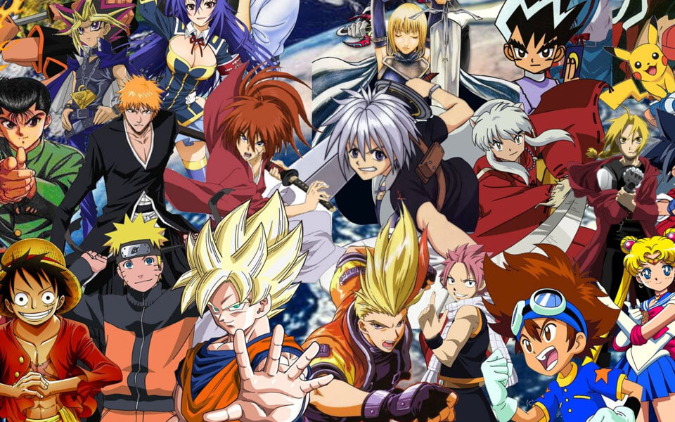

¿Porqué el anime fue tan popular que las caricaturas?
Para empezar, las caricaturas llevaron mucha popularidad en la decada de los70 hasta hoy en día pero el estilo va cambiando demasiado, así como las productoras de Disney, Cartoon Network o Nickelodeon, tuvieron gran popularidad absoluta, pero ya habia decaido por demasiados fandoms tóxicos
que la verdad arruinan una cosa pero el anime, también es muy popular pero va arruinando cada vez más con los fandoms y el contenido de adultos mayores en algunas páginas prohibidas, pero no estoy hablando de esto, sino que estoy refiriendo en comparar una caricatura y un anime, una caricatura y un anime tienen diferentes diseños y diferentes audiencias, pero la mayoría las caricaturas su audienciacia es para niños, pero hay para jóvenes
y aldutos pero son muy pocas las que crean ya que en el anime su audiencia son niños, jóvenes y adultos, más bien todas las edades.
Desarrollo
Algunos animes que te podrían interesarte
Existen diferentes maneras de disfrutar anime cuando quieras y donde quieras, como algunas aplicaciones como Crunchyroll o Funimation pero hay buenos recomendaciones de anime para este año sobretodo si eres un otaku o si no lo eres no importa aquí te dejo algunas:
Karakai Jouzu no Takagi-san 3. Sono Bisque Doll wa Koi wo Suru. Shingeki no Kyojin: The Final Season Part 2. Arifureta Shokugyou de Sekai Saikyou 2nd Season. Vanitas no Karte Part 2. Kawaii dake ja Nai Shikimori-san.
Tate no Yuusha no Nariagari Season 2. Spy x Family. Komi Can't Communicate. esas fueron algunas recomendaciones para ver anime en este año 2022.
Antes de pasar a lo importante
Recomendaciones de animes retro
Si eres de la generación de antes, o que desde niño, jovén de la década de los 70 a 2000's a qui te traigo algunas recomendaciones de animes retro que no te puedes perder: Cowboy Bebop. Fullmetal Alchemist: Brotherhood. Death Note. Tengen Toppa Gurren Lagann. Darker than Black.
Angel Beast. Inuyasha. Ranma 1/2 Neon Genesis Evangelion. Naruto. Mazinger Z. La Familia Robbinson.
Heidi. Tokyo Ghoul
interés
Animes pocos conocidos
Como les dije, el anime está lleno de aventuras, risas, sentimientos u otros aspectos de géneros para todas las edades, pero hay animes que valieron la pena pero siguen hechando un granito de esfuerzo para seguir y muy pocamente conocidos por los fans u algunos casos olvidados, que desde antes fueron populares y luego lo dejaron atrás, como en este caso algunos mencionados:
Haikyuu que es un anime de deportes basado en el voleibol, Relife que es uno de los géneros románticos, La historia se basa en Arata Kaizaki, quien se encuentra desempleado y soltero a sus 27 años, siendo definido por la sociedad como un tipo fracasado, ademas de que sigue siendo mantenido por sus padres,
otro fue Sword Art Online, odiado por muchos y amado por muchos, equilibradamente seguía en pie esforzandose, otro que es Konosuba uno de los otros animes que también llegó al éxito pero casi no fue tan reconocido, uno de las series que marcó las carcajadas de la gente y el humor Isekai, y luego está Arpeggio Of Blue Steel, que es una serie de barcos y submarinos que en un futuro la tierra está en un mundo inundado gracias al calentamiento global,
Black Cat, Saber J y otros también quedaron en el olvido pero seguirán siendo un éxito, y nuevos como 86 que no se si también será un gran anime para un gran futuro.
Top 10 Mejores Animes en la industria animada
Attack Of Titans (Shingeki No Kyojin)
Demon Slayer (Kimetsu No Yaiba)
KonoSuba!
Sword Art Online
Inuyasha, Hagano No Yashahime
Sailor Moon
Evangelion
Pokemon
Naruto, Naruto Shippuden
Dragon Ball Z
Top Animes de las décadas de los 70, 80, 90
Ranma 1/2
Cowboy Bebop
Mazinger Z
Heidi
Pokemón
Evangelion
Sailor Moon
One Peace
Akira
Dragon Ball
Anime
28/Enero/2022
Contexto
Explicación sobre el anime en breve
Al rededor del año 1900, durante la Primera Guerra Mundial, el anime se le conoce así por tener un estilo de dibujo difernte a la de otras de varias secuencias en dibujos que ya para los años 60 se le conocia como animeeshon, el cual se abrevia la palabra anime, y está compuesta con diversos géneros de animación japonesa para todas las edades.

Desarrollo
Es un medio de entretenimiento de comercio y cultura, ya que al rededor del mundo, se volvió muy popular en el resto del mundo y en el arte animado y cinematográficos, estos dibujos son para todas las edades, niños, adolescentes y adultos y también con la existencia del manga, cómics estilos orientales y posee de géneros como aventura, acción, romance, cuentos infantiles, fantasía, comedia y entre otros géneros más.
Motivación
Me ha gustado el anime porque solamente he visto como la cultura japonesa es tan extensiva en todo el mundo.
Investigación
¿Cómo lo hace?
Técnicamente el anime se trabaja a mano, por diferentes tipos de medios de dibujo, como podría ser el papel, digital u otro estilo para luego ser computarizadas y animarlas comoe n las caricaturas solamente se pueden basar en los mangas para revisar su historia y vaciar el contenido hecho, no obstante estrechan la relación con las Novelas visuales Entre los rasgos características de los personajes de anime se puede encontrar el tamaño de los ojos, sus finas narices y bocas, su muy particular cabello y su cuerpos así como la expresividad de los personajes y el hecho de tener un actitud definida que los hace casi reales a otro contexto.
Schodt, Frederik L. Reprint edition Agosto de 18, 1997. Manga Manga: The World of *Japanese Comics. Tokyo, Japan: Kodansha International.
La polémica y la censura en el resto del mundo
Si algunas series licenciadas de Japón son por los mal entendidos de la cultura para que se editen al fin y al cabo, que la crítica más importante es porque algunos animes pueden contener escenas de violencia, sangre, erotismo, lenguaje ofensivo y demás cosas para un menor de edad, hasta algunos deportes practicados, como emn los Estados Unidos, tuvieron que editar algunas escenas violentas de cualquier anime ya que se le cosidera como parte del horario infantil para que niños lo puedan ver, y lo mismo hcieron en países de latinoamérica como México, con el anime de comedia romantica Ranma 1/2, el cual se trasmitió para el canal de Azteca 7 y Dragon Ball Z y Super junto a Sword Art Online en Canal 5
Autor anónimo EcuRed, 2016
Audio y banda sonora
El OST también conocido por
Original Soundtrack
, el cual se ocupa en la mayoría de películas y series, pero en el anime es muy diferente, la apertura
opening
cuando aparecen los créditos iniciales, es acompañada una animación que suele caracterizar la serie. Pueden ser interpretadas o compuestas por bandas o cantantes populares en Japón, incluso cantantes internacionales o doblados en cualquier idioma, la clausura
ending
Pueden ser interpretadas o compuestas por bandas o cantantes populares en Japón o incluso los actores y la banda sonora, los
background music
para acompañar las escenas
Autor anónimo EcuRed, 2016


 Anime
Anime Desarrollo
Desarrollo
.png) Páginas principales
Páginas principales